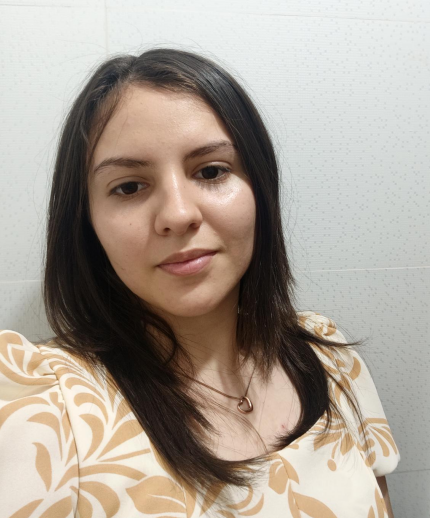

Universidad Nacional de Asunción — Filial Villarrica
2023 – presente
- Licenciatura en Ciencias Informáticas

Celular: 0976 441493
Correo: luzservin4444@gmail.com
Domicilio: Calle Principal, Pirity, Mbocayaty
C.I.: 6.071.894 | Nacimiento: 03/08/2004, Villarrica
Nacionalidad: Paraguaya | Estado civil: Soltera
Soy una persona organizada y responsable, con habilidad para colaborar con mis compañeros de trabajo. Mi enfoque es tranquilo y positivo, lo que me permite trabajar de manera eficiente.